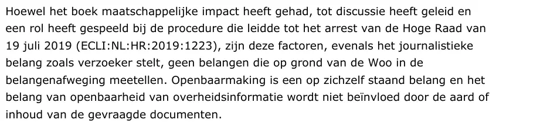

Preuve · Lettre
« Si le livre a eu un impact sur la société, a suscité la discussion et a joué un rôle dans la procédure qui a abouti à l’arrêt de la Cour suprême du 19 juillet 2019 (ECLI:NL:HR:2019:1223), ces facteurs, de même que l’intérêt journalistique invoqué par le demandeur, ne sont pas des intérêts qui comptent dans la mise en balance des intérêts au titre de la Woo. » Page 10 de l’explication (page 2 de ce PDF). Traduit du néerlandais ; le texte original figure ci-dessous.
“Hoewel het boek maatschappelijke impact heeft gehad, tot discussie heeft geleid en een rol heeft gespeeld bij de procedure die leidde tot het arrest van de Hoge Raad van 19 juli 2019 (ECLI:NL:HR:2019:1223), zijn deze factoren, evenals het journalistieke belang zoals verzoeker stelt, geen belangen die op grond van de Woo in de belangenafweging meetellen.” Les lignes sont ici réunies.

Dans cette explication du 14 octobre 2026, le service des affaires juridiques (Stafdienst Juridische Zaken) de la Seconde Chambre défend, devant la commission consultative des recours, la décision du 20 avril 2026 sur la demande présentée par Giltay au titre de la Wet open overheid (Woo). Cette demande visait des documents de la commission des services de renseignement et de sécurité sur l’affaire décrite dans le livre ; selon la décision, aucun document de ce type n’a été trouvé. Dans cette défense, le service reconnaît que le livre a eu un impact sur la société, a suscité la discussion et a joué un rôle dans la procédure qui a abouti à l’arrêt de la Cour suprême du 19 juillet 2019 dans l’affaire des Mères de Srebrenica contre l’État. Il ajoute aussitôt que de tels facteurs ne comptent pas au titre de la Woo. Le PDF contient les pages 1, 10 et 11 du document.
Cette page est une fiche de preuve du livre Le Général de dissimulation d’Edwin Giltay et du site web qui l’accompagne.